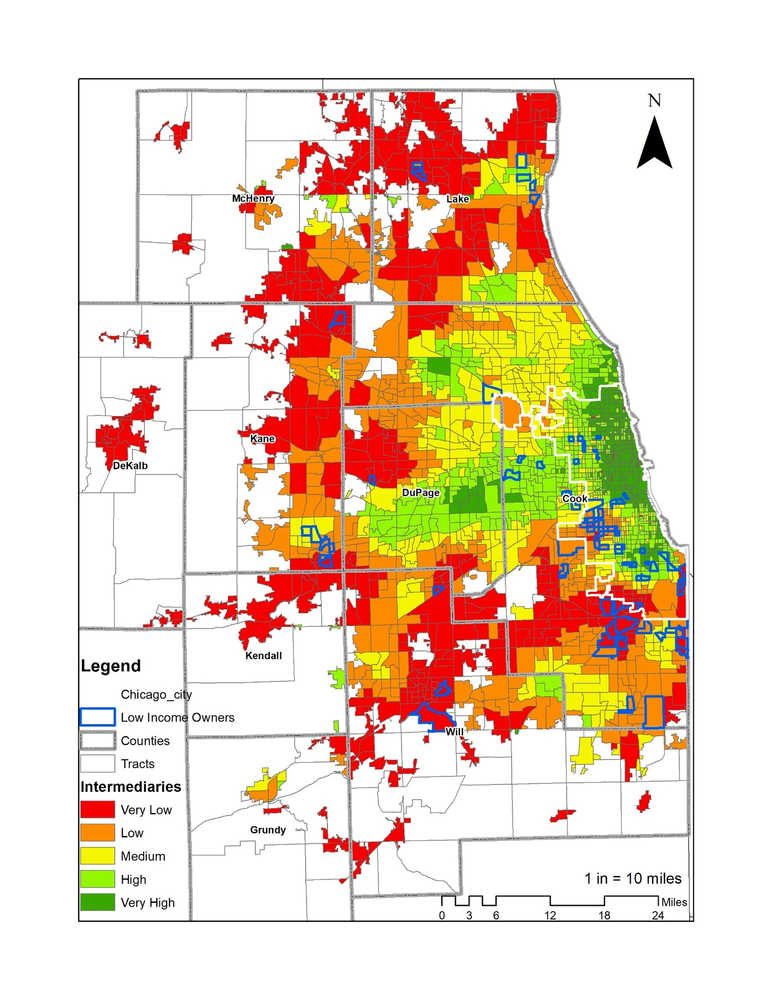

Climate adaptation
Climate adaptationSpatial Capacity Loss and Regional Futures
Emerging research on how hazards, infrastructure stress, and fiscal dependence reshape metropolitan systems and municipal adaptation decisions.
Research
My research portfolio integrates peer-reviewed scholarship, applied reports, spatial analysis, community engagement, and student research. Each project page is structured around the same elements: overview, why it matters, methods, outputs, and downloadable resources.
Projects on climate vulnerability, spatial capacity loss, managed retreat, subsidized housing, and regional governance.
Climate adaptationEmerging research on how hazards, infrastructure stress, and fiscal dependence reshape metropolitan systems and municipal adaptation decisions.
 Climate + aging
Climate + agingCommunity-engaged research on flood risk, housing vulnerability, mobility, health, and receiving-community readiness for older adults in coastal Massachusetts.
A student research report from Housing Policy and Community Development Finance that maps elderly and disabled subsidized housing populations at risk from sea-level rise.
Projects on older adult mobility, nonprofit transportation, One-Call/One-Click systems, and access to daily needs.
A mixed-methods evaluation of transportation incentives for older adults and disabled riders, examining mobility, health, housing, financial stress, social connection, and spatial travel patterns.
National and regional research on mobility coordination systems serving older adults, people with disabilities, and transportation-disadvantaged riders.
Projects on inclusionary housing, LIHTC, low-income homeownership, opportunity mapping, and nonprofit intermediary networks.

ChicagoResearch on opportunity mapping, racialized spatial patterns, and intermediary organizations that support low-income and minority homeowners.
Research and public resource development on inclusionary housing program prevalence, design, and production across U.S. jurisdictions.
Research on how fair housing litigation shaped Texas Qualified Allocation Plans, LIHTC siting incentives, revitalization criteria, and definitions of neighborhood opportunity.

Education and public pathways
My research and teaching include programs that introduce high school and graduate students to planning, public service, community development, spatial analysis, and applied research.
Open the High School Planning Pathways page